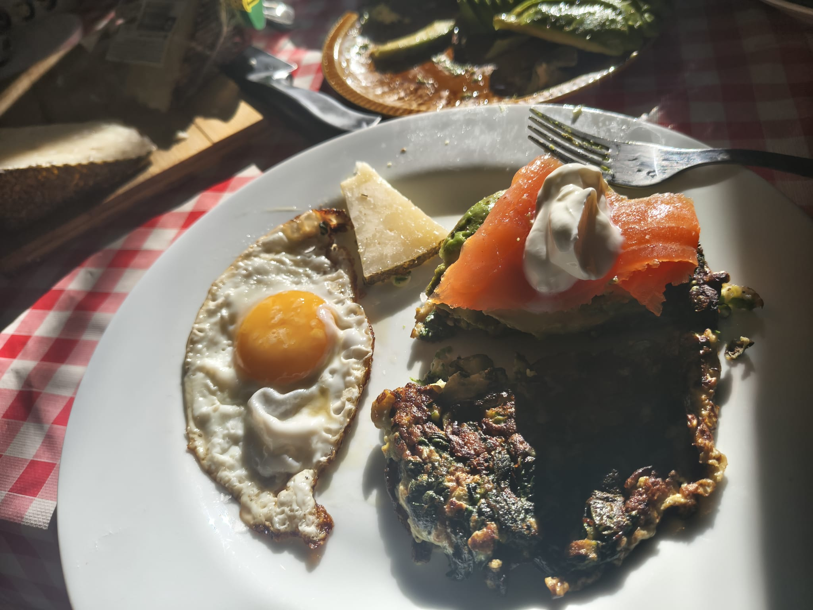
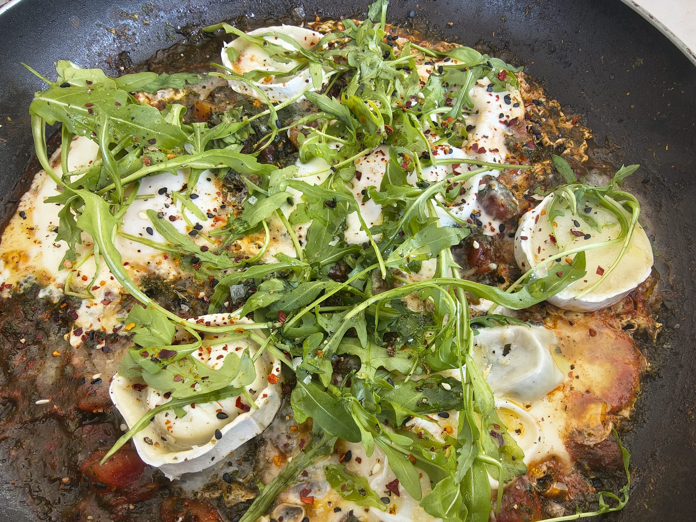
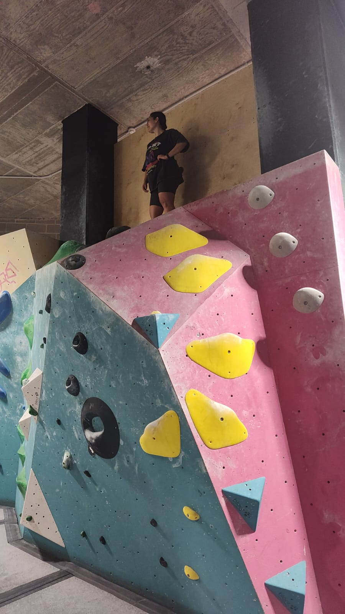
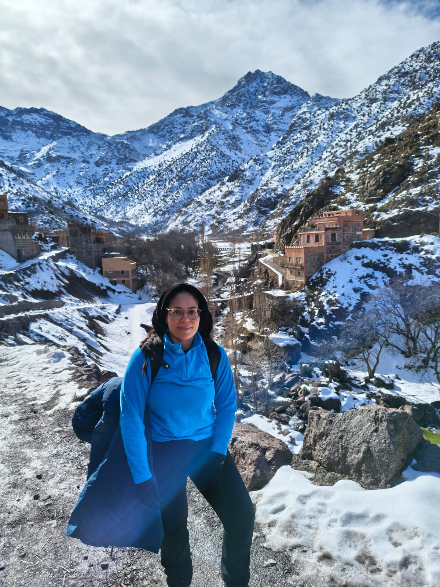
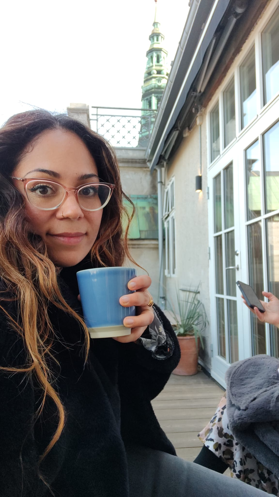
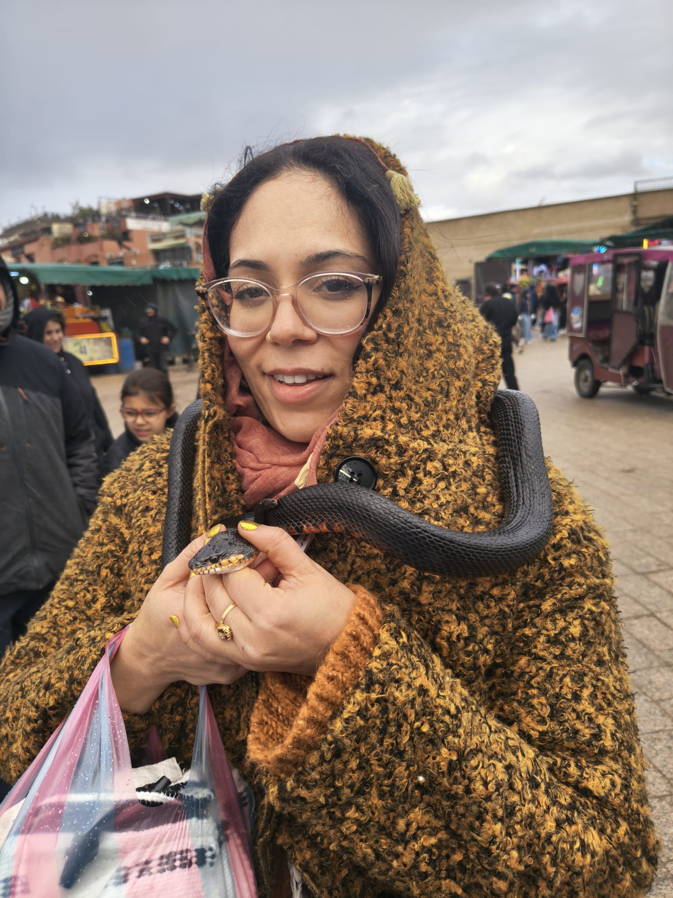

Cooking & Baking
Some people have Pilates; others have Netflix. I have cooking, baking, basting, and marinating! For me, cooking is therapy: it's art you can eat. It doesn't get any better than that!


Climbing
Strength meets logic. Climbing can be exhausting, but the mental challenge of "reading" a route is what keeps me going for hours—it's very much like debugging code, but with a lot more chalk and adrenaline.


Traveling
If my budget allows for it, I love to be surprised by new things, or the same old things done in a new way. Whether it's the canals of Copenhagen or a hidden corner in Barcelona, I'm always looking for a fresh perspective.